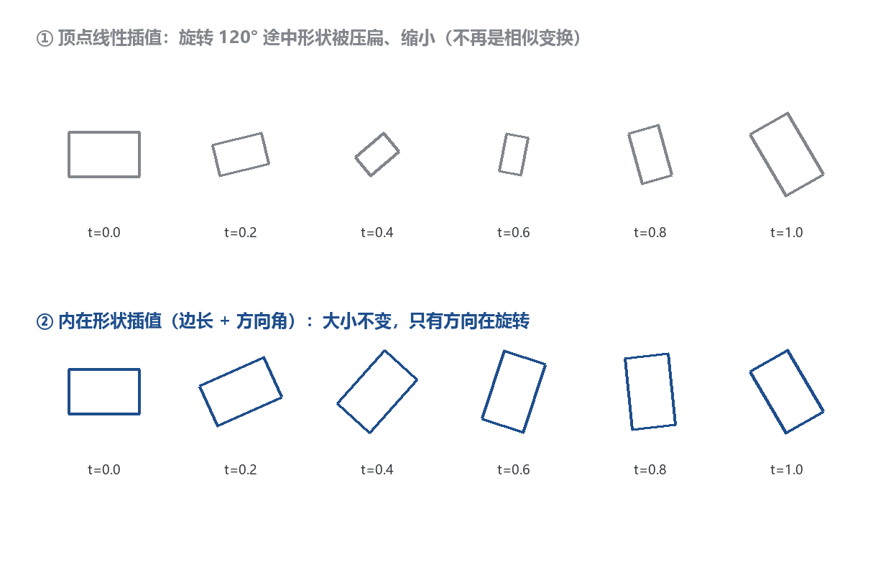

Course / Article
- 章节
- 3,118 字
- 2026.11.15
- 8 个小节
第五部分 二维形状渐变与图像 Morphing
下载 PDF离线 / 打印版
4.1 2D Shape Blending 涉及哪两个子问题
给定两个多边形/二维形状 A 与 B，求中间过渡形状 P(t)，t∈[0,1]。核心是两个子问题：
| 子问题 | 英文 | 要解决的问题 | 典型方法 |
|---|---|---|---|
| ①对应问题 | correspondence / vertex matching | A 的哪个顶点（边、特征点）对应 B 的哪个？顶点数不同怎么办？ | 手工指定、特征点匹配、基于几何相似性/曲率的自动匹配、顶点加密（resampling）使数目一致 |
| ②插值问题（顶点路径问题） | interpolation / vertex path problem | 已知对应关系后，中间形状的顶点沿什么路径、以什么速度从 A 走到 B？ | 线性顶点插值、内在形状插值（边长+角度）、基于物理/优化的路径、Edge Tweaking |
很多教材把"对应"再拆为"拓扑对应 + 几何对应"，但考试答两点即可：对应（correspondence）与插值路径（vertex path）。
为什么"插值路径"是独立问题：即使对应完全正确，直接把顶点坐标线性插值 (1−t)p⁰ + t p¹ 也会使中间形状缩小、边长变短、旋转不自然（因为两条边同时向内插值），甚至出现自交与退化。这正是内在形状插值要解决的问题。
4.2 基于内在形状插值的多边形渐变（重点）
动机：线性顶点插值在"形状旋转"时会塌陷——例如把一个正方形旋转 45° 得到另一个正方形，顶点线性插值会让它先缩小再放大（沿直线穿过中心）。
基本思想（Sederberg & Greenwood 1992；Sederberg, Gao, Wang, Mu 1993）：不直接插值顶点坐标（extrinsic，外在表示），而是插值形状的"内在量"——边长与转角（intrinsic，内在表示），插值完再用这些内在量重建几何。
数学原理：
设多边形顶点 p₀, p₁, …, p_{n−1}（p_n = p₀），边向量 e_i = p_{i+1} − p_i。用复数表示平面点 p_i = x_i + i y_i，则
其中 l_i 为第 i 条边的长度，θ_i 为相邻边之间的转角，φ_i 为边的绝对方向角。内在表示即 {l_i} 与 {θ_i}（等价地 {φ_i}）。
插值：
（角度必须先展开（unwrap），避免 ±2π 跳变；这样中间形状会"自然地转过"相应角度，而不是抄近路塌陷。）
重建：从起点出发沿边累加
闭合约束：多边形必须闭合，即
而内在参数有 2n 个（n 条边长 + n 个转角），只有 2 个闭合约束（以及对两端形状的固定），因此存在多余自由度。插值后的角度和一般不再等于 2π 的整数倍、边长和也不再闭合，必须处理：
- 均摊法：把闭合误差（角度和与 2π 的差、闭合向量的残差）按比例分摊到各角度/各边长上；
- 最小二乘法：求使闭合残差最小、同时尽量保持已插值内在量的调整量；
- 优化法：在零空间（不影响两端形状的自由度）内优化中间形状（不自交、面积变化平滑、保持特征），这正是 Edge Tweaking 的思路。

优点： - 中间形状不会因顶点直线插值而塌陷/缩小； - 旋转、缩放等"整体变换"在内在表示中自然实现（方向角连续变化、边长按比例变化）； - 中间形状的边长与角度变化线性、可预测、易控制。
缺点： - 需要顶点对应 + 顶点加密（两个形状顶点数/结构不同需先重采样）； - 闭合约束的处理是启发式/优化，可能产生自交、翻转； - 只适合简单多边形/轮廓，对带孔洞、多连通、三维情形需扩展； - 角度展开与分支判断带来实现复杂度。
考点：内在插值的"内在量"是边长与角度（而非顶点坐标）；为什么能避免塌陷；重建公式；闭合约束与自由度；优缺点。
4.3 Edge Tweaking 的思想
背景：内在形状插值虽然有"边长 + 角度线性插值 + 闭合约束"，但中间形状仍可能自交、边缘抖动、某些边突然翻折。Edge Tweaking（边调整）就是在内在插值框架下，对边（的边长/方向）做有控制的微调，使中间过程更自然、避免退化。
基本思想：
- 内在表示中，每个中间时刻有 2n 个内在参数，而约束只有闭合（2 个）与两端固定，存在大量多余自由度（零空间）；
- 把这些多余自由度用作"调节手柄"：对某些边的长度 l_i 或转角 θ_i 施加随时间变化的调整量 δl_i(t)、δθ_i(t)；
- 调整量必须满足端点为零：δ(0) = δ(1) = 0，即不影响两端原始形状，只改变中间的过渡路径；
- 用这些调整消除自交、避免边翻转、保持凸性/面积平滑，或满足用户指定的艺术效果；
- 调整量可用简单的窗函数（如 sin(πt) 类函数、分段线性函数）加权，使微调在中段最强、两端平滑归零。
意义：把"morph 的路径"从唯一确定的线性插值，变成可在零空间内编辑的一族路径；这与后面"运动重定向/变形中的零空间编辑"是同一思想（用多余自由度满足附加约束而不破坏已有约束）。
考点：Edge Tweaking 的关键词是"在内在插值的基础上、利用多余自由度、调整边、端点不变（不影响首末形状）、避免自交/改善中间形状"。
4.4 图像 Morphing 的原理
图像 morphing（图像渐变/变形过渡） 由两个独立步骤组成：
| 步骤 | 名称 | 作用 |
|---|---|---|
| ① 几何形变 | Warping（几何变换/映射） | 把两幅图的对应特征对齐到中间位置，消除"几何差异" |
| ② 颜色融合 | Cross-dissolve（交叉溶解/混合） | 在已对齐的两幅图上按 t 做线性混合，消除"颜色/纹理差异" |
其中 W₀、W₁ 是把中间图像坐标映回源图的反向映射（backward mapping），W₀⁻¹、W₁⁻¹ 为由特征对应定义的正向形变。用反向映射采样可避免正向映射产生的空洞（holes）与重叠。
关键点：
- 必须建立两幅图的特征对应（人脸上的眼睛、鼻尖、嘴角、轮廓等）；
- 形变量在 t=0 与 t=1 时必须为 0（分别退化为原图）；
- 只做 cross-dissolve 而不做 warping 会产生"重影/鬼影（ghosting）"；只做 warping 不混合会产生"撕裂/接缝"；
- 中间图像的每个像素要采样两次（源图 0 与 1），再做加权；
- 时间参数 t 的分布决定过渡节奏（可加缓动）。
4.5 基于网格的图像 Morphing
做法：
- 在两幅图上分别标注一组对应网格（通常为三角形网格，也可是四边形），网格顶点落在特征点上；
- 中间网格顶点直接线性插值：
- 对网格中的每个三角形，用其三个顶点的对应关系求出仿射变换（因为三角形确定唯一仿射映射）：
由 三 个 顶 点 对 应 解 出 - 用该仿射变换的逆把中间三角形内的每个像素映射回源图三角形，双线性采样取颜色；
- 对两幅源图各做一次，再按 t 混合。
优点：控制精确、局部性好（可单独调整五官）、适合人脸等有明确结构的对象、计算量可控（按三角形）。 缺点：需人工标网格且两图三角化必须一致（不然对应关系断裂）；网格边界处若不连续会产生接缝；大变形时三角形会翻转（flip）导致撕裂；对非刚性大变形（如大笑、转头）需要很密的网格。
4.6 基于线对的图像 Morphing（Beier–Neely 方法）
思想：用一组有向线段对（line pairs）代替网格来定义特征对应。用户只需在源图与目标图上各画若干对应线段（如"左眼→左眼"），不必构造网格。
算法（反向映射，对每个目标图像的像素 X）：
对第 i 条线段对（源线段 P_iQ_i，目标线段 P_i'Q_i'）：
- 计算 X 相对于目标线段的位置（局部坐标）：
- 把 (u, v) 映到源线段上得到 X_i'：
- 位移 D_i = X_i' − X，权重
- 综合所有线段：
- 在源图中按 X' 采样，得到形变结果；两图各做一次后交叉溶解。
优点：交互简单（画线即可）、局部控制强、可处理一定的旋转与变形、无需一致三角化。 缺点：权重参数 (a, b, p) 需调；大旋转/大变形时出现折叠、鬼影、撕裂；每条线影响全局（计算 O(像素×线数)）；线段少时约束不足、多时相互干扰。
4.7 基于 StyleGAN 的肖像 Morphing
思想：用数据驱动的生成模型代替几何对应与形变——不显式建立特征对应，而是在生成器的隐空间（latent space）中插值，让生成器"自己"生成中间人脸。
StyleGAN 的结构要点：
- 生成器由映射网络 f: z → w（多层 MLP，把 512 维正态噪声 z 映到解耦性更好的 W 空间）与合成网络 g 组成；
- 合成网络逐层用风格调制（AdaIN）把 w 注入：每一层控制不同尺度的特征（低分辨率层控制大结构，高分辨率层控制细节）；
- 每层还注入随机噪声（控制细小纹理/发丝），并有 style mixing（不同层用不同 w）训练策略提升解耦；
- 常见扩展：W+ 空间（每层用不同的 w），使编辑更精细；StyleGAN2/3 改进伪影与训练稳定性。
肖像 morphing 流程：
- 反演（GAN inversion）：把两张真实人像 I₀、I₁ 映射为隐编码 w₀、w₁。方法有：优化法（最小化重建误差）、编码器法（pSp、e4e 等）、混合法；
- 隐空间插值：
- 生成：G(w(t)) 得到中间帧，形成连续过渡序列；
- 可叠加属性方向编辑（如 StyleGAN 的语义方向、StyleCLIP 文本驱动）做可控 morph。
优点：无需人工特征对应、自动保持身份一致性与结构合理、生成图像质量高、可分层控制不同语义属性、对姿态/光照差异鲁棒。 缺点：需要大量训练数据与算力；反演误差会导致身份漂移/细节丢失；隐空间并非完全解耦（插值时属性会一起变化）；可能产生伪影；只适用于训练分布内的对象（人脸），泛化到任意物体需重训；不可控的"随机性"。
对比：传统几何 morphing 是"先对齐再混合"（显式对应 + warping），StyleGAN morphing 是"在隐空间走直线，让网络解码"（隐式对应 + 生成先验）。
4.8 StyleGAN 中 Coarse / Middle / Fine styles 的语义
StyleGAN 的 style mixing 研究表明，不同分辨率层的 style 控制不同层次的语义（以人脸为例）：
| 层次 | 对应分辨率（256² 模型示意） | 控制的语义特征 |
|---|---|---|
| Coarse styles（粗糙风格） | 4² ~ 8² | 姿态（头的朝向）、脸型/轮廓、性别、年龄、发型大形、整体比例——"大局/结构" |
| Middle styles（中等风格） | 16² ~ 32² | 五官的形状与位置（眼睛、鼻子、嘴）、表情、发型细节、耳朵——"特征" |
| Fine styles（精细风格） | 64² ~ 1024² | 颜色、肤色、皮肤纹理、光照、皱纹/雀斑/毛孔、发丝——"微观细节/外观" |
记忆法：低分辨率层决定"是谁、怎么站"（结构/姿态），中分辨率层决定"长什么样"（五官），高分辨率层决定"看起来什么质感"（颜色纹理）。这一分层正是"分层插值 morph"的依据：先对齐大结构，再调五官，最后过渡颜色。
考点：三层的分辨率区间与语义对应（coarse=姿态/脸型/性别；middle=五官/表情/发型；fine=颜色/纹理/细节）；以及"为什么可以在不同层用不同 t"。